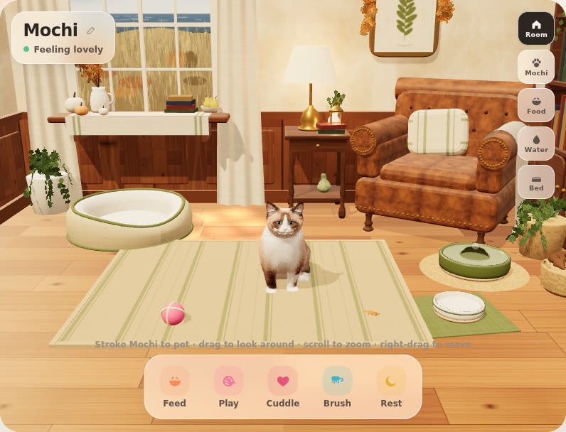

Mochi project board
The app (live)What everyone sees. Add it to your home screen.
PreviewWork in progress, before it goes live.
Review packClose-ups, clips and sounds of the preview.
Holiday design briefWhat to draw for rooms and accessories.
Where we are
Mochi is a 3D ragdoll cat in a cosy study. She now entertains herself, so the app is relaxing to just watch, and care is stress-free: she never gets sick or suffers if you forget her.
What she does on her own
- Hops from her bed onto the window sill and watches birds fly past or perch in the window; chirps at them.
- Naps on the club chair after kneading the seat; dozes in the sunbeam; plays with her ball by herself.
- Once a visit, pats the top book off the sill, looks at it, then at you.
- Something worth watching about every half minute; she curls into a round ball when she sleeps.
Care and saving
- Saves by itself on the phone; updates never touch anyone's cat. Saves from every earlier version are tested before each release.
- "Back up or move your kitten" (pencil next to her name) gives a code to restore her on any phone or browser. On iPhone, removing the home-screen app removes its storage, so keep a code.
- Needs ease down slowly and never fall below 30% from time alone. Naps recharge quickly, for night owls.
Look and sound
- Her meow is the first version's soft tone (our own, no licence needed); her purr is a free (CC0) recording. No background noise; the fountain is silent.
- Watch button: the room fills the screen and the controls tuck away.
- ✦ button: room decor. Thanksgiving in the Hamptons is available to everyone for now.
Thanksgiving room (from Orion's designs)

- Oatmeal rug with faded sage stripes and a flax border; flax-linen bed with olive piping and an ivory lining; cream cable-knit throw; linen cushion with sage stripes.
- Dunes and the sea out of the window (dusky at night).
- All ten props: ivory and apricot pumpkins, sage gourd, pear bowl, oak branches, oak-leaf garland over the print, knit throw, linen cushion, brass lantern with a flickering candle, pinecone basket, plus a single oak leaf on the rug.
- Differences from the drawing: the rug and bed keep the app's existing shapes, and the leaves are a garland over the print rather than a separate wreath.
Next for Orion
- Christmas room sketches by November 15, same format as Thanksgiving (see the brief).
- Accessories for Christmas: bandana, Santa hat, collar with bell, bow. Neck or head pieces only, drawn front and side.
- A written OK that the designs can be used in a commercial app.
Open questions
| Topic | Where it stands | Status |
|---|---|---|
| Rewards | Holiday rooms are free to pick for now. Later: unlock with care (days or bond), or simply in season. | To decide |
| In-app purchases | Care always free, no nagging. Paid extras as small one-time packs (about $0.99–$2.99): holiday decors, accessories, coat colours, toys with new play moments, a second cat, the desktop companion; later a bundle. Needs the app wrapped as an App Store app first (Apple keeps 15% for small developers). | Brainstorm |
| Name | "Pocket Kitten" is already used by an indie game, and "Pocket Cat" apps exist. Choose a more distinctive name and have a trademark search done before launch. | To decide |
| Better cat model | Biggest jump: a professionally rigged and animated ragdoll with a commercial licence ($50–$300). If Meshy: paid plan; closed mouth, all four paws down, tail straight, no whiskers baked in, highest texture detail. One full-body model, no separate head. | To decide |
| Desktop mini window | "Pop out Mochi" into a small always-on-top window (Chrome and Edge on computers); a Mac/Windows app later. | Later |
| Voice cues | Her name, "come here", "sit" with a tap-to-talk button. | Later |
| Music | Optional Spotify link; on hold until full playback on iPhone can be tested with a Premium account. | On hold |
How we work
- Changes go to preview first, with a build number on screen and a review pack; they go live only when Merlin says so.
- Credits: 3D cat model made with Meshy (CC BY 4.0); purr recording by Kerzoven via OpenGameArt (CC0).